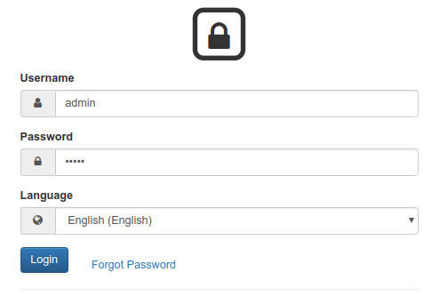
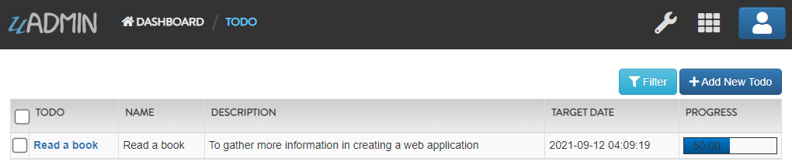

Language Functions¶
In this section, we will cover the following functions in-depth listed below:
uadmin.CacheTranslation¶
CacheTranslation allows a translation to store data in a cache memory.
Type:
bool
For versions 0.2.0 and above and Settings model is available, visit Cache Translation page for an example.
If Settings model is not available, follow this approach:
Example:
package main
import (
"github.com/uadmin/uadmin"
)
func main() {
// Allows a translation to store data in a cache memory
uadmin.CacheTranslation = true
// Prohibits a translation to store data in a cache memory
uadmin.CacheTranslation = false
}
Quiz:
uadmin.CustomTranslation¶
CustomTranslation is a list of string where you could add URLs to JSON files that uAdmin will save for translation.
Type:
[]string
Suppose that English is the only active language in your application. Go to the main.go and apply the following codes below. It should be placed before uadmin.Register.
func main(){
// Place it here
uadmin.CustomTranslation = []string{"models/custom", "models/todo_custom"}
uadmin.Register(
// Some codes
)
}
From your project folder, go to static/i18n/models. You will notice that two JSON files are created in the models folder.

Every JSON file is per language. In other words, if you have 2 languages available in your application, there will be a total of 4 created JSON files.
Quiz:
uadmin.Language¶
Language is a system in uAdmin that is used to add, modify and delete the elements of a language.
Structure:
type Language struct {
Model
EnglishName string `uadmin:"required;read_only;filter;search"`
Name string `uadmin:"required;read_only;filter;search"`
Flag string `uadmin:"image;list_exclude"`
Code string `uadmin:"filter;read_only;list_exclude"`
RTL bool `uadmin:"list_exclude"`
Default bool `uadmin:"help:Set as the default language;list_exclude"`
Active bool `uadmin:"help:To show this in available languages;filter"`
AvailableInGui bool `uadmin:"help:The App is available in this language;read_only"`
}
There are 2 functions that you can use in Language:
Save() - Saves the object in the database
String() - Returns the Code of the language
There are 2 ways you can do for initialization process using this function: one-by-one and by group.
One-by-one initialization:
func main(){
// Some codes
language := uadmin.Language{}
language.EnglishName = "English Name"
language.Name = "Name"
}
By group initialization:
func main(){
// Some codes
language := uadmin.Language{
EnglishName: "English Name",
Name: "Name",
}
}
In the following examples, we will use "by group” initialization process.
Page:
Quiz:
uadmin.Tf¶
Tf is a function for translating strings into any given language.
Function:
func(path string, lang string, term string, args ...interface{}) string
Parameters:
path (string): This is where to get the translation from. It is in the format of "GROUPNAME/FILENAME” for example: "models/Todo”
lang (string): Is the language code. If empty string is passed we will use the default language.
term (string): The term to translate
args (…interface{}): Is a list of arguments to fill the term with place holders
First of all, create a back-end validation function inside the todo.go.
// Validate !
func (t Todo) Validate() (errMsg map[string]string) {
// Initialize the error messages
errMsg = map[string]string{}
// Get any records from the database that matches the name of
// this record and make sure the record is not the record we are
// editing right now
todo := Todo{}
system := "system"
if uadmin.Count(&todo, "name = ? AND id <> ?", t.Name, t.ID) != 0 {
errMsg["Name"] = uadmin.Tf("models/Todo/Name/errMsg", "", fmt.Sprintf("This todo name is already in the %s", system))
}
return
}
Run your application and login using "admin” as username and password.
Open "LANGUAGES” model.

Search whatever languages you want to be available in your application. For this example, let’s choose Tagalog and set it to Active.

Open "TODOS” model and create at least one record inside it.
Logout your account and login again. Set your language to Wikang Tagalog (Tagalog).

Open "TODOS” model, create a duplicate record, save it and let’s see what happens.

The error message appears. Now rebuild your application and see what happens.
[ OK ] Initializing DB: [15/15]
[ WARNING] Translation of tl at 0% [0/134]
It says tl is 0% which means we have not translated yet.
From your project folder, go to static/i18n/models/todo.tl.json. Inside it, you will see a bunch of data in JSON format that says Translate Me. This is where you put your translated text. For this example, let’s translate the err_msg value in Tagalog language then save it.

Once you are done, go back to your application, refresh your browser and see what happens.

And if you rebuild your application, you will notice that uAdmin has found 1 word we have translated and is telling us we are at 1% translation for the Tagalog language.
[ OK ] Initializing DB: [15/15]
[ WARNING] Translation of tl at 1% [1/134]
Congrats, now you know how to translate your sentence using uadmin.Tf.
Quiz:
uadmin.Translate¶
Translate is used to get a translation from a multilingual fields.
Function:
func(raw string, lang string, args ...bool) string
Parameters:
raw string: Is the field of the model that you want to access to
lang string: Is the code of the language
args …bool: Series of arguments that returns a boolean value
Before we proceed to the example, read Tutorial Part 7 - Introduction to API to familiarize how API works in uAdmin.
Suppose I have two multilingual fields in my Item record.

Create a file named custom_todo.go inside the api folder with the following codes below:
// CustomTodoHandler !
func CustomTodoHandler(w http.ResponseWriter, r *http.Request) {
r.URL.Path = strings.TrimPrefix(r.URL.Path, "/custom_todo")
res := map[string]interface{}{}
item := models.Item{}
results := []map[string]interface{}{}
uadmin.Get(&item, "id = 1")
results = append(results, map[string]interface{}{
"Description (en)": uadmin.Translate(item.Description, "en"),
"Description (tl)": uadmin.Translate(item.Description, "tl"),
})
res["status"] = "ok"
res["item"] = results
uadmin.ReturnJSON(w, r, res)
}
Establish a connection in the main.go to the API by using http.HandleFunc. It should be placed after the uadmin.Register and before the StartServer.
func main() {
// Some codes
// CustomTodoHandler
http.HandleFunc("/custom_todo/", api.CustomTodoHandler) // <-- place it here
}
api is the folder name while CustomTodoHandler is the name of the function inside custom_todo.go.
Run your application and see what happens.

Quiz: